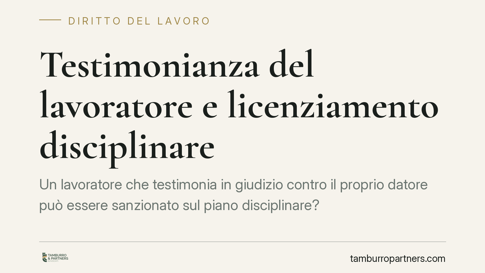

Testimonianza del lavoratore e licenziamento disciplinare
Un lavoratore che testimonia in giudizio contro il proprio datore può essere sanzionato sul piano disciplinare? La giurisprudenza distingue tra l'adempimento di un dovere processuale, tutelato dall'ordinamento, e la condotta autonomamente illecita, come la falsa testimonianza o la divulgazione ingiustificata di notizie riservate. Una distinzione che incide direttamente sulla legittimità del licenziamento e sull'onere probatorio del datore.

Il caso in sintesi
Il tema torna all'attenzione della Corte di Cassazione: può la deposizione resa dal lavoratore in un processo civile, in senso sfavorevole al datore di lavoro, integrare gli estremi di un illecito disciplinare idoneo a giustificare il licenziamento?
*Nota redazionale: il riferimento alla specifica pronuncia (numero ed anno) è da verificare prima della pubblicazione; l'analisi che segue riflette l'orientamento consolidato della giurisprudenza di legittimità sul punto.*
La risposta non è netta e dipende dalla natura della condotta. Testimoniare è un dovere civico prima ancora che processuale: chi è chiamato a deporre è tenuto a dire la verità. L'adempimento di tale dovere non può, di per sé, tradursi in una violazione degli obblighi contrattuali.
Inquadramento normativo
L'obbligo di fedeltà del lavoratore trova la sua base testuale nell'art. 2105 c.c., che vieta due condotte specifiche: fare concorrenza al datore e divulgare notizie attinenti all'organizzazione e ai metodi di produzione dell'impresa, o farne uso in modo da recare pregiudizio.
La norma non contempla un generico dovere di "lealtà silenziosa". L'obbligo di collaborazione e correttezza discende, semmai, dalla lettura combinata dell'art. 2105 con l'art. 2104 c.c. (diligenza) e con i principi generali di correttezza e buona fede nell'esecuzione del contratto (artt. 1175 e 1375 c.c.).
Su questo impianto la giurisprudenza ha costruito una linea di confine precisa. La testimonianza veritiera resa in giudizio non viola l'art. 2105 c.c.: il lavoratore che riferisce fatti realmente accaduti, anche se sgraditi al datore, esercita un dovere pubblicistico e non commette alcun illecito disciplinare. Diverso è il caso della falsa testimonianza, della calunnia o della divulgazione strumentale di notizie riservate non necessarie ai fini della deposizione: qui la condotta esce dal perimetro del dovere e può assumere autonomo rilievo disciplinare.
Implicazioni pratiche
La distinzione tra dovere e illecito sposta con decisione l'onere probatorio sul datore di lavoro.
Non basta dimostrare che il lavoratore abbia deposto in senso a sé sfavorevole. Occorre provare che la deposizione fosse falsa, oppure che il dipendente abbia superato i limiti del dovere testimoniale, ad esempio rivelando informazioni riservate estranee all'oggetto del giudizio e idonee a danneggiare l'impresa.
È un onere impegnativo. La verità della testimonianza, di regola, è già stata vagliata nel processo in cui è stata resa; contestarla in sede disciplinare richiede elementi concreti e non mere valutazioni di opportunità. In assenza di prova rigorosa, il licenziamento intimato per questa ragione è esposto a un elevato rischio di illegittimità.
Va inoltre considerato il profilo della genuinità della motivazione: se la sanzione appare come una reazione ritorsiva all'esercizio di un diritto o di un dovere, il datore si espone a censure ulteriori, anche sul piano della nullità.
Cosa fare in concreto
Per i datori di lavoro:
- Verificare con precisione la natura della condotta contestata: distinguere la testimonianza veritiera, di per sé lecita, dalla eventuale falsità o dalla divulgazione di notizie riservate.
- Raccogliere prove documentali concrete prima di avviare il procedimento disciplinare: sospetti e valutazioni soggettive non integrano l'onere probatorio richiesto.
- Valutare preventivamente la sostenibilità della sanzione rispetto ai fatti accertati, evitando reazioni che possano apparire ritorsive.
Per i lavoratori:
- Conservare copia degli atti processuali e del verbale di deposizione, utili a dimostrare la corrispondenza tra quanto dichiarato e i fatti.
- In caso di licenziamento, rispettare i termini di decadenza per l'impugnazione: 60 giorni per l'impugnazione stragiudiziale e ulteriori 180 giorni per il deposito del ricorso giudiziale (art. 6 L. 604/1966, come modificato dalla L. 183/2010). I termini vanno comunque verificati in relazione alla fattispecie concreta.
Conclusioni
Il principio è lineare nella formulazione, delicato nell'applicazione. Il dovere di testimoniare prevale sull'interesse del datore a non essere contraddetto in giudizio. Il licenziamento disciplinare regge solo se ancorato a una condotta autonomamente illecita, provata in modo puntuale. Ogni valutazione, in un senso o nell'altro, richiede l'esame del caso specifico.
---
*Contributo informativo a cura di Tamburro & Partners - Avv. Giuseppe Tamburro. Non costituisce parere legale.*
Ogni storia di lavoro ha i suoi tempi.
Se gestisci HR e vuoi un confronto su contenzioso, ispezioni o licenziamenti, scrivi allo studio. Ti rispondiamo entro un giorno lavorativo.